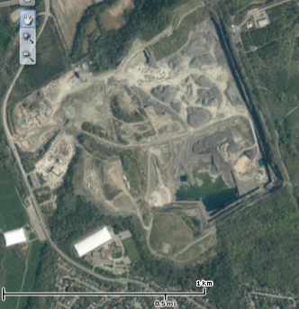
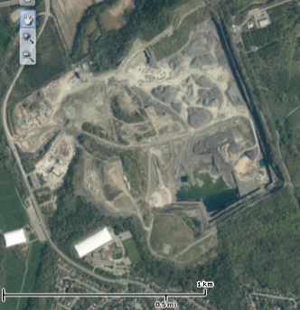

The route I took, from Eastpark, along Innes and all the way to Greens Creek had many instances of humans affecting the environment. One of the most profound examples was the Lafarge quarry. As you can see from these two satellite photos, the quarry has affected about 0.85km² of the surrounding land. Lafarge has transformed a large portion of the land into unusable pits or mounds of waste rock and dirt. This has effectively removed any possibility of the terrain returning to a natural state with the next few hundred years (erosion alone would take well over a thousand years). However, I do think that the jobs that are created by the Lafarge quarry outweigh the negative impact on the environment, seeing as we would import the gravel produced by the quarry from elsewhere creating more emmisions from transporting it.
 

Lafarge, 1958
Lafarge, 2017
A second example of human effects on the environment is the train line that runs through Green's Creek. While it has been shut down since 1939 there are still a few visible effects you can find. First of all, there is the path that was carved into the terrain to allow the train tracks to take a flat path. This made it much easier to find the second example, the remains of the bridge.


Since the train track was removed in 1939 there is very little remaining. Most items of value were removed and sold so you will rarely find anything other than concrete and the occasional rail spike, as seen here. The old pathway has by now returned to its natural state and the only difference between it and the surrounding terrain is that the trail is slightly lower and flatter and with fewer trees.
This does, however, allow one to more easily find the valley where the bridge was built and explore it. While doing so a few years ago, my father, my sister and I found a couch sitting on the hill. We still have no idea where it came from and we certainly have not sat on it, but it is another example of the many ways people can affect the surrounding environment.

This couch is located just underneath the concrete wall holding up the earth. You can find it by just going about 2/3 of the way down the trail to the left and looking to your right.